提现管理
一、风控审核
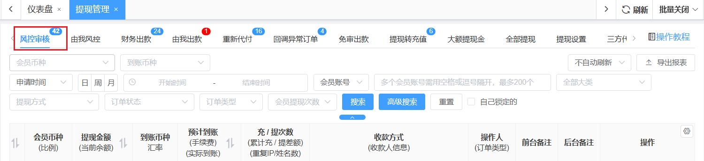
1、功能说明
开启风控审核配置后，会员的提现订单将多出审核步骤，操作员在本页进行审核，通过审核后的提现订单将进入下个步骤。
2、字段说明
(1) 订单号：点击订单号弹出提现详情窗口。
● 弹窗底部新增历史操作记录。
● 可根据操作行为、操作人、操作时间、操作结果进行搜索。
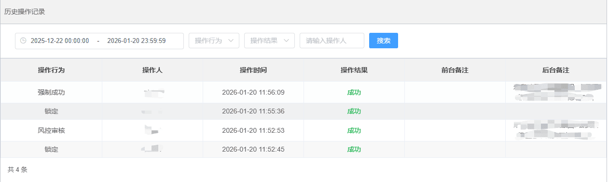
(2) 会员ID：点击弹出会员概览窗口，可查看会员相关信息。
(3) 会员账号：会员注册时填写的帐号，点击后弹出会员概览窗口，同会员ID，此栏位包含VIP等级、会员层级、提现次数标签。
A. 未提现会员: 该会员已有0笔成功提现订单。
B. 已首次提现: 该会员已有1笔成功提现订单。
(4) 申请时间：该提现订单创建时间。同时记录后台操作解锁、强制拒绝、审核等时间。
(5) 会员币种：该会员注册时选择的币种，即该会员余额、上下分、游戏投注的币种。
比例：越南盾1：1000、印尼盾1：1000等少数币种存在比例。例如：某越南盾会员提现1000越南盾，则按1：1000比例换算，1000除以1000=1.00。
(6) 提现金额：即提现多少金额至银行或三方钱包账号。订单金额、赠送金额、实际金额、总账变金额的币种，同会员币种。
(7) 到账币种：会员提现时选择的到账币种。例如：人民币会员使用USDT提现，到账币种为USDT。
汇率：当会员币种与使用的充值通道币种不一致时，则会显示出汇率。例如：某人民币会员使用USDT通道充值，则显示出CNY ：USDT的汇率。
(8) 预计到账：预计到账金额，显示的金额、手续费、扣除手续费的实际到账金额皆为到账币种。点击稽核详情、投注记录后新开页签跳转至稽核管理、投注记录页面。
(9) 充提次数：充值/提现次数记录。同时显示累计充提差额、重复IP人数。
A. 重复IP人数：与该会员账号提现相同IP重复人数。
(10) 收款方式：该笔提现订单对应的详细会员收款账户信息。
(11) 后台备注：记录未自动风控审核的原因。
3、操作
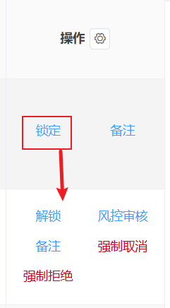
(1) 锁定：锁定操作后，该订单由当前操作人进行审核，可在"由我风控"看到自己锁定的订单。
(2) 解锁：将锁定的订单解锁后，可便于其他操作人员对订单进行操作。
(3) 风控审核：订单通过风控审核后，订单将从风控审核页移至财务出款及全部提现页。
A. 顶部显示币种、会员账号、会员ID。
B. 内嵌集成调用其他模块的现有页面；操作帐号无该页签权限时，不显示该页签。
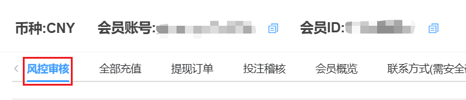
(4) 强制拒绝分3个选项：
是否风控处罚：
A. 不处罚：直接取消订单退还提现金额。
B. 增加稽核任务：取消订单退还提现金额，增加稽核任务。
C. 扣除余额：取消订单且不退还提现金额。
(5) 强制取消：取消后，冻结金额将返还给玩家。
A. 可设置前/后台取消原因: 取消原因备注。
B. 当该会员币种的提现稽核模式为: "充值可直接提现"。
· 可为玩家设置提现条件 : "无限制可直接提现"(默认) 或是 "必须有效投注一次"。
C. 当该会员币种的提现稽核模式为:"必须完成所有稽核"。
· 可为玩家设置提现条件 : 请填写稽核值(默认为0)。
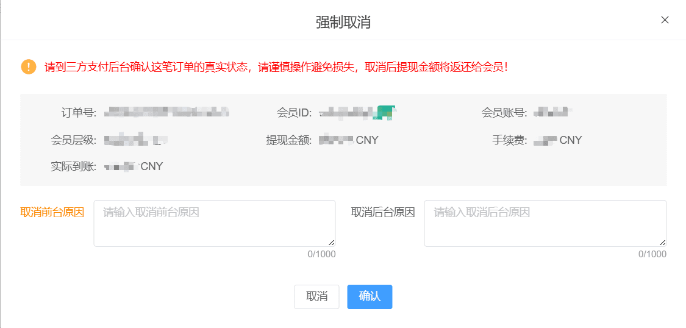
(6) 备注：可输入前台备注与后台备注内容。
(7) 特殊场景说明：当三方回调失败时，会有以下选项：
A. 付款失败：当业主确认出款失败且无法正常出款时点击使用（用于三方已经出了结果，但是未成功回调，需要手动进行处理的订单）。
B. 强制出款：当业主确认出款成功后，状态仍未更改时，可使用该功能（用于三方已经出了结果，但是未成功回调，需要手动进行处理的订单）。
C. 重新审核：付款失败后需重新审核该笔订单。
4、条件筛选
4.1 顶部
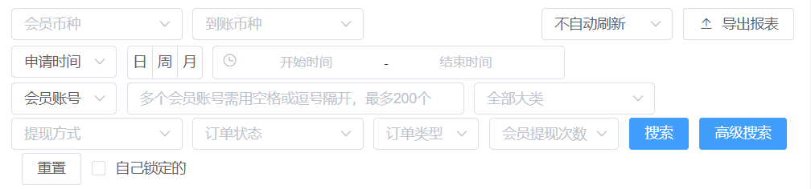
(1) 搜索/高级搜索：能通过相关字段进行数据检索。
会员提现次数:
A. 未提现会员：该会员已有0笔成功提现订单。
B. 已首次提现：该会员已有1笔成功提现订单。
C. 已多次提现：该会员已有2笔及以上成功提现订单。
(2) 订单状态：可根据状态勾选未锁定及已锁定的订单状态，可与其他筛选条件交集使用。
(3) 自己锁定的：勾上后仅显示自己锁定的订单，和其他筛选条件可取交集。
(4) 刷新设置：设置订单页自动刷新周期。
(5) 导出报表：针对会员的订单信息记录导出excel。
4.2 底部
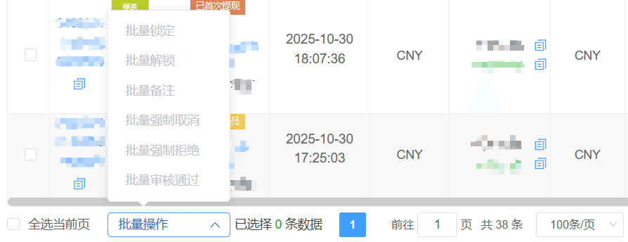
(1) 全选当前页：全选当前页面所有订单进行批量操作。
(2) 批量操作：对选择的订单进行批量操作(锁定、解锁、备注、强制取消、强制拒绝、审核通过)。
(3) 显示已选择数据：设置订单页自动刷新周期。
(4) 总笔数：共__条(显示该页共有多少条数据。100条/页)。
二、由我风控
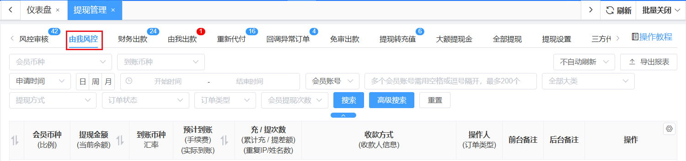
1、功能说明
当开启风控审核配置后，在风控审核点击锁定订单则会同步进入由我风控页签，操作审核人员可在由我风控页签进行审核，通过审核后的提现订单将进入下个步骤。 (气泡数为全部待自己处理的订单数)
2、字段说明
(同风控审核规则，此处不再复述)
3、操作
(同风控审核规则，此处不再复述)
4、条件筛选
4.1 顶部(除无自己锁定的筛选项外，其他同风控审核规则，此处不再复述)
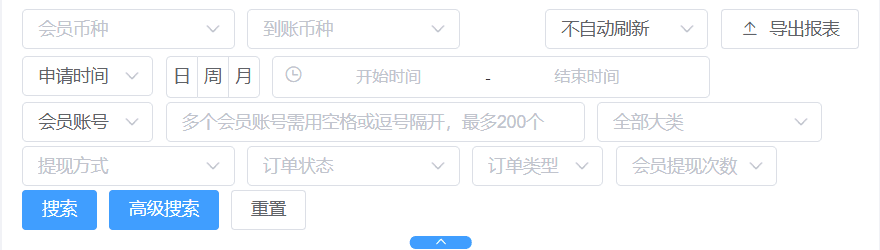
4.2 底部
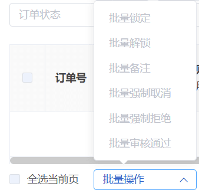
三、财务出款
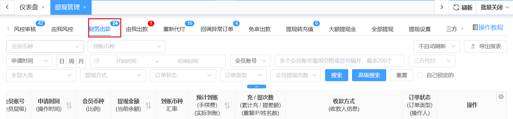
1、功能说明
已通过风控审核或免审的提现订单将显示在财务出款页面，操作人员可以对待出款及付款失败的订单进行操作出款。
2、字段说明
(同风控审核规则，此处不再复述)
3、操作
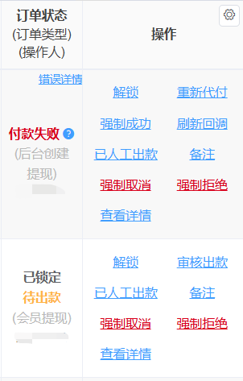
(1) 锁定：锁定操作后，该订单由当前操作人进行出款，可在"由我出款"看到自己锁定的订单。
(2) 解锁：将锁定的订单解锁后，可便于其他操作人员对订单进行操作。
(3) 审核出款：点击审核出款后，将在审核窗口中显示会员账号和提现信息，核对无误后选择三方代付通道出款。出款成功，在全部提现页面【订单状态】将更换为【待三方付款】状态。
A. 顶部显示币种、会员账号、会员ID。
B. 内嵌集成调用其他模块的现有页面；操作帐号无该页签权限时，不显示该页签。
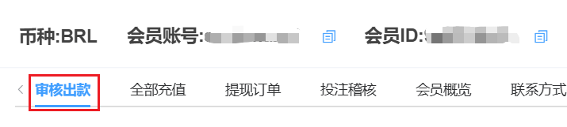
(4) 已人工出款：订单状态为【待出款】，人工出款成功后,此订单【订单状态】会更换为【已付款】状态。（请谨慎操作）。
A. 顶部显示币种、会员账号、会员ID。
B. 内嵌集成调用其他模块的现有页面；操作帐号无该页签权限时，不显示该页签。
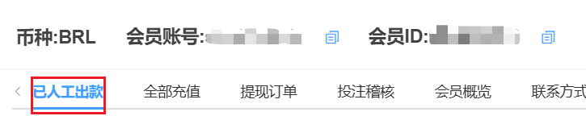
(5) 强制成功：订单状态为【付款失败】点击强制出款后,在全部提现页面【订单状态】会更换为【已强制出款】状态。（请谨慎操作）。
(6) 重新代付：订单状态为【付款失败】点击重新代付后,此订单【订单状态】栏会更换为【待出款】状态。（请谨慎操作）。
A. 顶部显示币种、会员账号、会员ID。
B. 内嵌集成调用其他模块的现有页面；操作帐号无该页签权限时，不显示该页签。
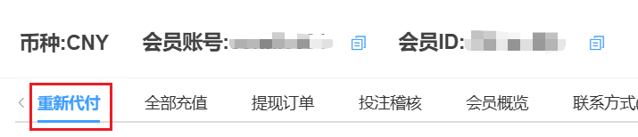
(7) 强制拒绝分3个选项：
是否风控处罚：
A. 不处罚：直接取消订单退还提现金额。
B. 增加稽核任务：取消订单退还提现金额，增加稽核任务。
C. 扣除余额：取消订单且不退提现金额。
(8) 强制取消：取消后，冻结金额将返还给玩家(同风控审核)。
(9) 刷新回调：显示四种刷新结果分别为刷新成功、该三方代付不支持刷新、每1分钟才能刷新一次、刷新失败。
(10) 备注：可输入前台备注与后台备注内容。
(11) 操作对应订单状态表如下：
4、条件筛选(其他同风控审核规则，此处不再复述)
4.1 顶部
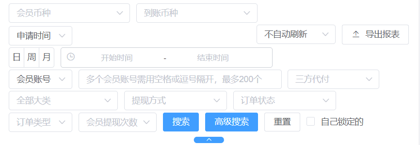
4.2 底部
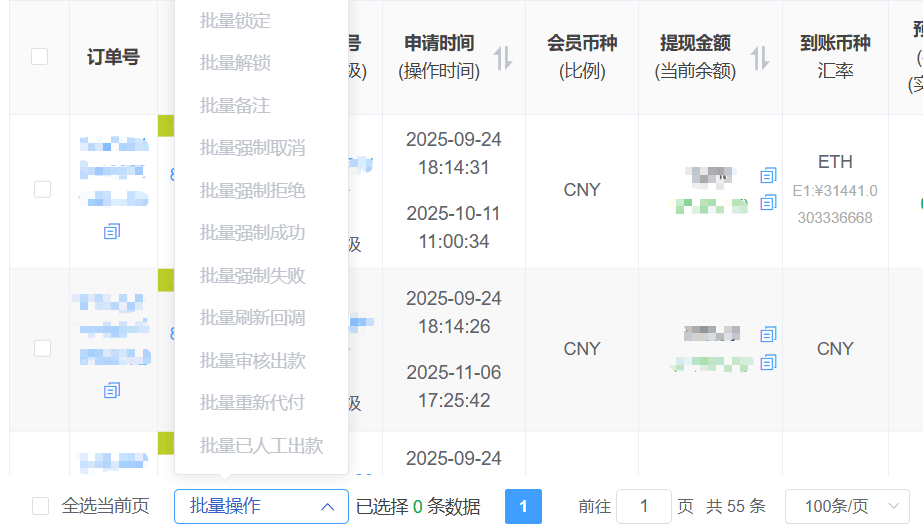
四、由我出款 (同财务出款)
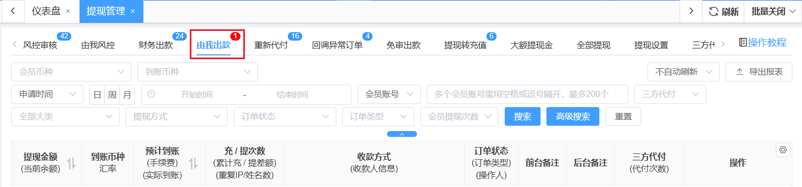
1、功能说明
已通过风控审核或免审核并被本账号锁定的提现订单将显示在由我出款页面，本账号可对待出款及付款失败的订单进行操作出款。
2、字段说明
(同风控审核规则，此处不再复述)
2026.01新增
(1) 订单状态：待三方付款（其他状态操作不受限制）
● 订单创建 3 分钟内：强制失败 / 强制取消 / 强制拒绝 相关强制操作按钮禁止点击，按钮置灰并显示倒计时。
● 批量操作：不到3分钟或不满足条件的订单将被跳过。
● 强制成功：大额提现现金不受此限制。
3、操作
(1) 解锁：将锁定的订单解锁后，可便于其他操作人员对订单进行操作。
(2) 审核出款：点击审核出款后，将在审核窗口中显示会员账号和提现信息，核对无误后选择三方代付通道出款。出款成功，在全部提现页面【订单状态】将更换为【待三方付款】状态。
(3) 已人工出款：订单状态为【待出款】，人工出款成功后,此订单【订单状态】会更换为【已付款】状态。（请谨慎操作）。
(4) 强制成功：订单状态为【付款失败】点击强制出款后,在全部提现页面【订单状态】会更换为【已强制出款】状态。（请谨慎操作）。
(5) 重新代付：订单状态为【付款失败】点击重新代付后,此订单【订单状态】栏会更换为【待出款】状态。（请谨慎操作）。
(6) 强制拒绝分3个选项：
是否风控处罚：
A. 不处罚：直接取消订单退还提现金额。
B. 增加稽核任务：取消订单退还提现金额，增加稽核任务。
C. 扣除余额：取消订单且不退提现金额。
(7) 强制取消：取消后，冻结金额将返还给玩家(同风控审核)。
(8) 刷新回调：显示四种刷新结果分别为刷新成功、该三方代付不支持刷新、每1分钟才能刷新一次、刷新失败。
(9) 备注：可输入前台备注与后台备注内容。
(10) 操作对应订单状态表如下：
4、条件筛选
4.1 顶部
(其他同风控审核规则，此处不再复述)
4.2 底部
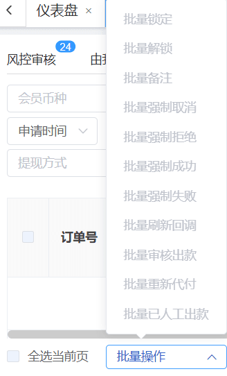
五、重新代付
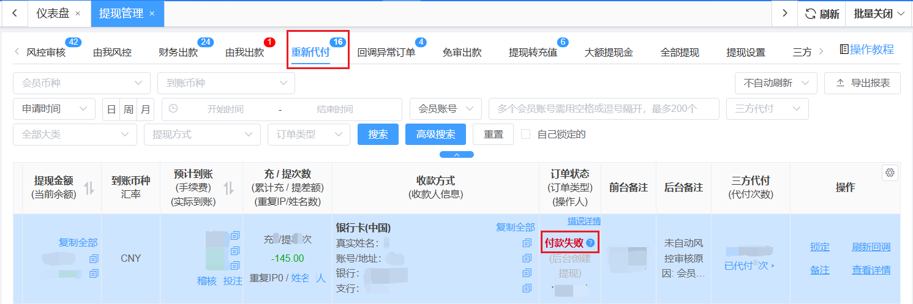
1、功能说明
仅显示付款失败状态的异常订单。
2、字段说明
除了无回掉异常类型选项，其他字段同风控审核规则，此处不再复述。
3、操作
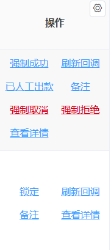
(1) 锁定：锁定操作后，该订单由当前操作人进行审核。
(2) 解锁：将锁定的订单解锁后，可便于其他操作人员对订单进行操作。
(3) 重新代付：若订单状态显示“付款失败”，点击此按钮，可重新选择代付，状态恢复为“已锁定”。
(4) 强制成功：订单状态为【付款失败】点击强制出款后,在全部提现页面【订单状态】会更换为【已强制出款】状态。（请谨慎操作）。
(5) 刷新回调： 显示四种刷新结果分别为刷新成功、该三方代付不支持刷新、每1分钟才能刷新一次、刷新失败。
(6) 已人工出款：订单状态为【待出款】，人工出款成功后,此订单【订单状态】会更换为【已付款】状态。（请谨慎操作）。
(7) 强制取消：取消后，冻结金额将返还给玩家。
A. 可设置前/后台取消原因: 取消原因备注。
B. 当该会员币种的提现稽核模式为: "充值可直接提现"。
· 可为玩家设置提现条件 : "无限制可直接提现"(默认) 或是 "必须有效投注一次"。
C. 当该会员币种的提现稽核模式为:"必须完成所有稽核"。
· 可为玩家设置提现条件 : 请填写稽核值(默认为0)。
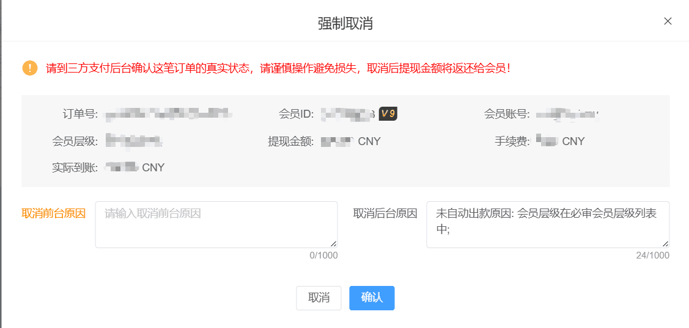
(8) 强制拒绝 ：是否风控处罚分以下3个选项
A. 不处罚：直接取消订单退还提现金额。
B. 增加稽核任务：取消订单退还提现金额，增加稽核任务。
C. 扣除余额：取消订单且不退还提现金额。
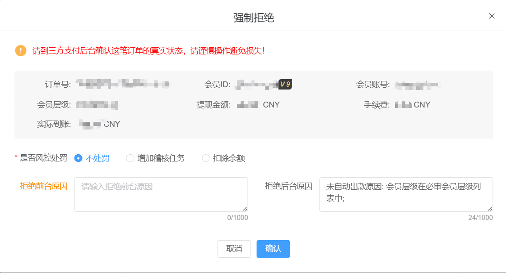
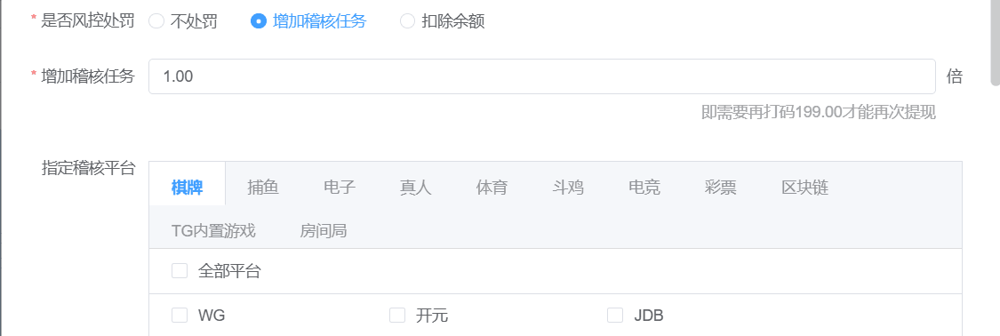
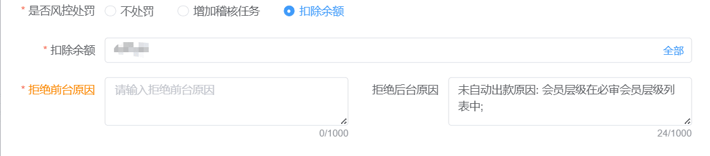
4、条件筛选
4.1 顶部：重新代付功能现已取消”订单状态”搜索项（默认显示所有“付款失败”状态）。
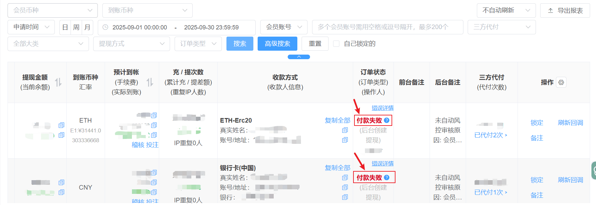
4.2 底部 (其他同风控审核规则，此处不再复述)
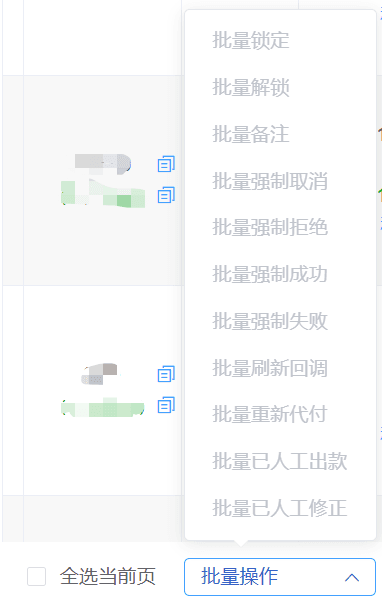
六、回调异常订单
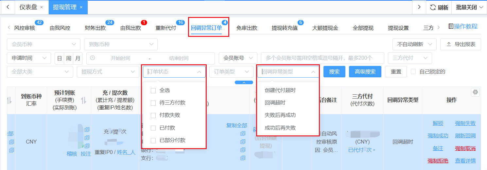
1、功能说明
存在第三方未响应或出现异常响应的提现订单，将显示再回调异常订单标签页内。操作人员可根据反馈的异常详情，查阅三方通道的异常情况进行再次确认出款；"订单状态"、"回调异常类型"删除待出款、直接失败选项。
2、字段说明
(1) 回调异常类型：
A. 创建代付超时：创建代付订单，与三方的数据交互出现超时的情况。三方渠道无法进行正常代付。
B. 回调超时：已创建代付订单，三方数据未返回。此时可进行刷新回调获取最新的三方返回数据。
C. 失败后再成功：三方先返回支付失败的状态，而后再返回支付成功的状态。
D. 成功后再失败：三方先返回支付成功的状态，而后再返回支付失败的状态。
(其他字段同风控审核规则，此处不再复述)
3、操作
(同风控审核规则，此处不再复述)
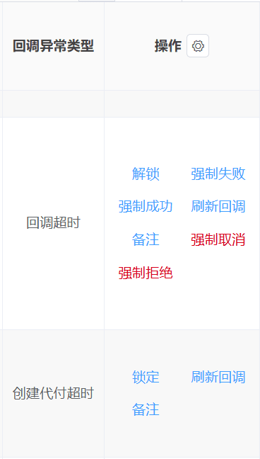
4、条件筛选
4.1 顶部/4.2 底部
(其他同风控审核规则，此处不再复述)
七、免审出款
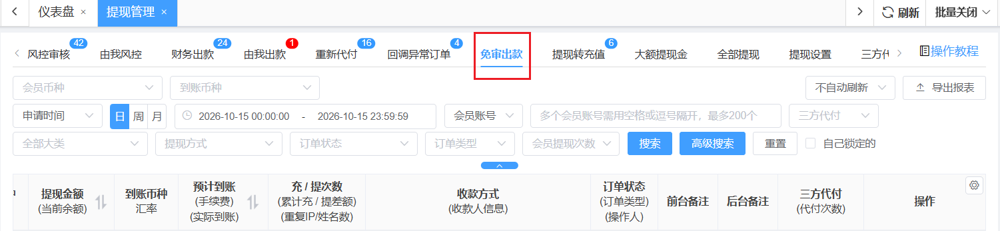
1、功能说明
满足预先配置免审核条件的提现订单将出现在免审出款页中，操作员可在本页面直接核实提现信息后出款。
特别说明：数字人民币类型不支持免审核出款。
2、字段说明
(同风控审核规则，此处不再复述)
3、操作
(同风控审核规则，此处不再复述)
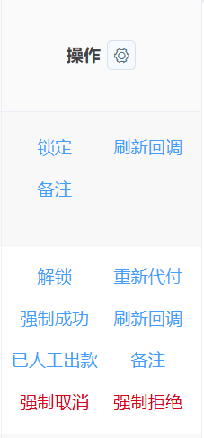
4、条件筛选
4.1 顶部/4.2 底部
(其他同风控审核规则，此处不再复述)
八、提现转充值
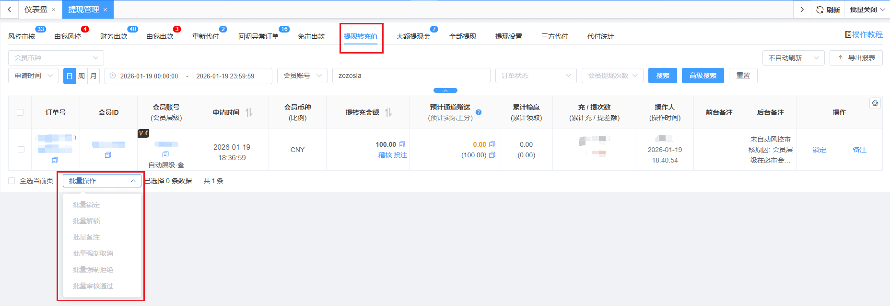
1、功能说明：允许会员在申请提现时，直接将提现金额转存为平台余额，简化用户充值步骤，同时可配置“充值比例赠送”和“充值活动赠送”来激励会员留存资金。
(1) 提现设置开启【提现转充值】，才显示出此页签。
(2) 会员申请提现时，提现金额作为充值本金，会加上本金部分的稽核倍数；提现订单正常进入风控审核流程，同时自动生成一笔充值订单，并且发放通道赠送和活动赠送。
(3) 可单个也可批量审核，通过后提现订单出款成功。
(4) 出款成功后，可在【全部充值】、【全部提现】 查询订单记录。
(5) 算正式充值：
A. 计入以下报表：日运营报表、会员报表
B. 次数统计：提现、充值次数各+1
C. 金额统计：提现、充值总额皆增加。（增加金额 = 提交且成功的转充值金额）
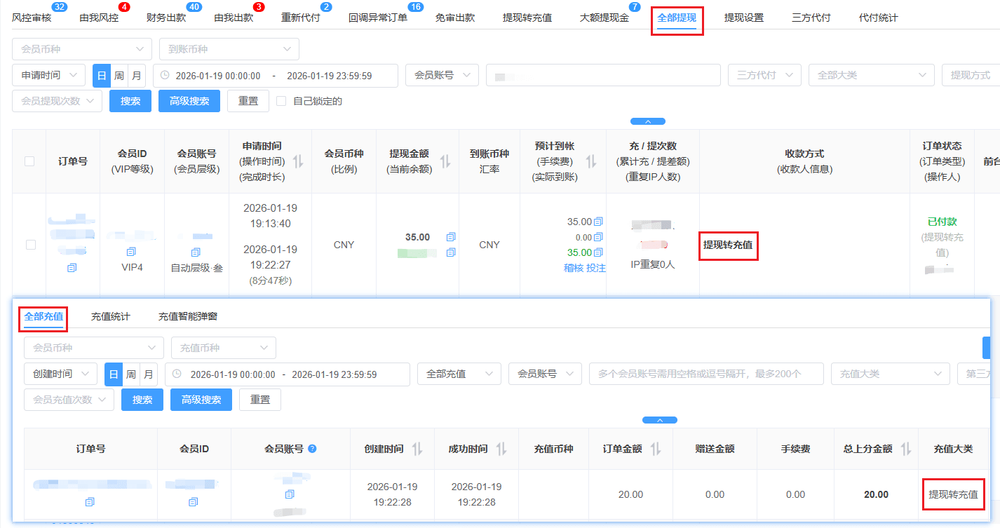
2、设定：
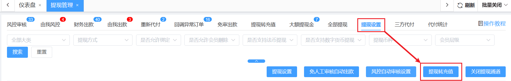
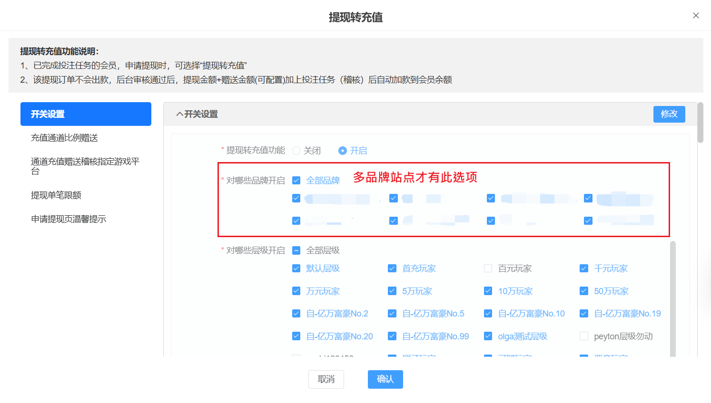
(1) 提现管理－提现设置页签，新增【提现转充值】按钮
开关设置
(2) 默认关闭：隐藏下面所有选项 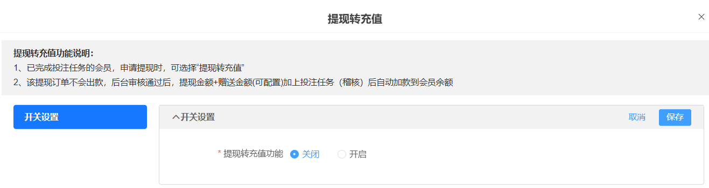
(3) 默认选中：全部品牌（多品牌站点才有此选项）、全部层级、无需审核自动完成（提现订单无需审核直接成功并自动上分）
(4) 本金稽核倍数：默认1倍。
充值通道比例赠送
(5) 充值比例赠送：默认参与赠送
● 分会员币种设置通道赠送比例
● 提现转充值则按通道比例进行赠送
(6) 提现页展示充值优惠：默认展示。
通道充值赠送稽核指定游戏平台
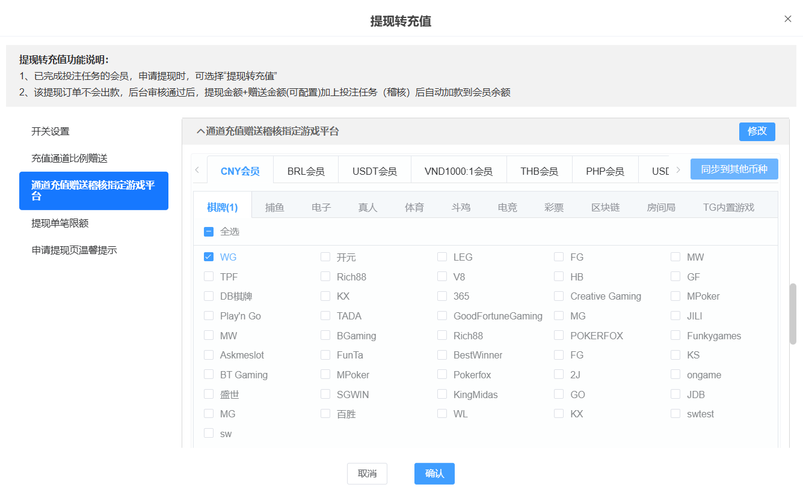
(7) 通道充值赠送稽核指定游戏平台：
● 此项为非必填：系统默认不指定稽核平台。
● 同步到其他币种：点击后弹出弹窗，默认全选，支持手动勾选对应币种。
提现单笔限额
(8) 提现单笔限额：可依会员层级分别配置提现单笔限额；第一行为默认全部层级。
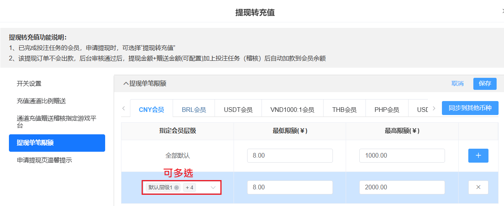
九、大额提现金
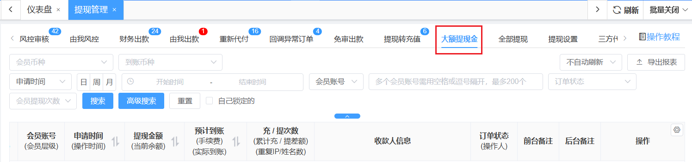
1、功能说明：针对大额提现需求，新增线下交割模式，提供更私密的提现通道。
2、字段说明：
(1) 收款人信息-该笔提现订单对应的详细会员信息，包含：联系手机、交割地点、时间、交割凭证。
(2) 没有代付相关功能和字段。
(3) 大额提现金的审核出款/批量审核出款，强制成功/批量强制成功弹窗和普通订单不一样。
● 审核出款弹窗
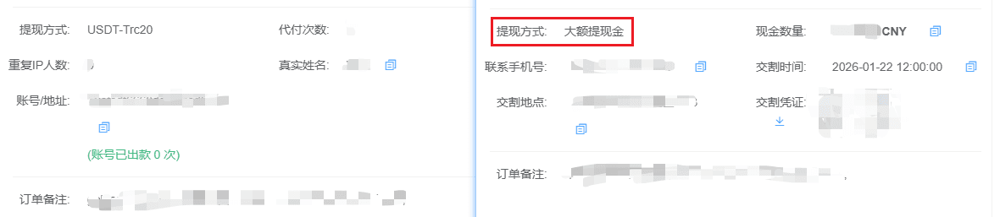
● 强制出款弹窗
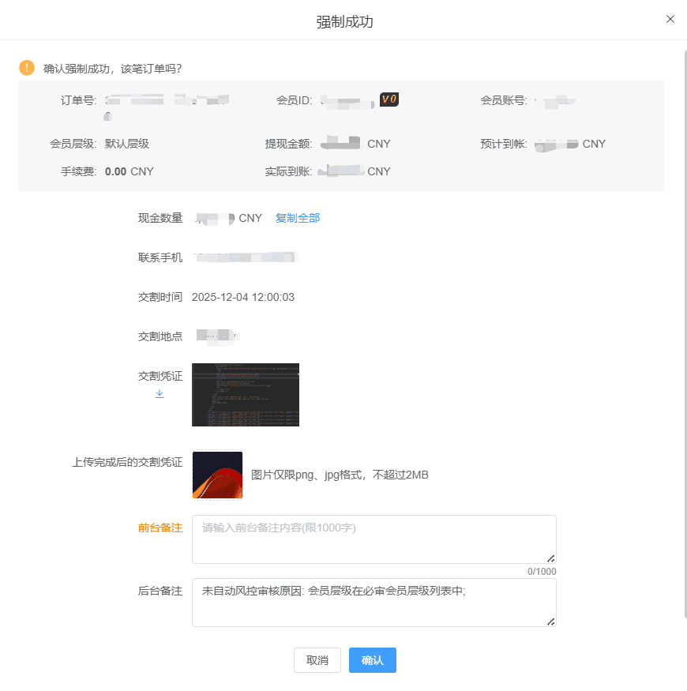
十、全部提现
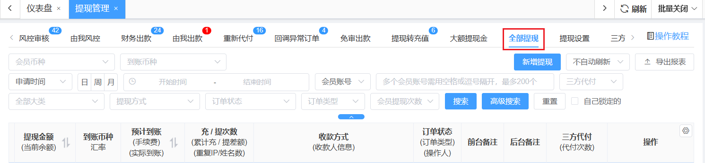
1、功能说明：
可查看包括待出款、待三方付款、付款失败、已拒绝、已取消、已付款、已强制出款、已部分付款等状态的提现订单均会出现该页面。
2、字段说明：
(1) 订单状态：
● 已部份付款：部分三方回调时会同时返回“成功金额”与“失败金额”。若出款金额未全部成功，系统将把该订单状态更新为「已部分付款」。该状态为最终完结态。
(2) 成功金额(失败金额)：此字段为分数单位，列表默认隐藏此列，需手动在自定义列中开启；未收到回调时显示为空。
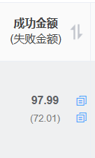
3、操作
(同风控审核规则，此处不再复述)
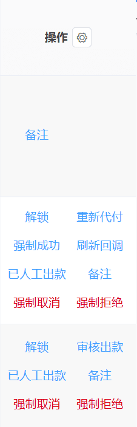
操作对应订单状态表如下：
4、条件筛选
4.1 顶部/4.2 底部
(其他同风控审核规则，此处不再复述)
4.3 新增提现
由后台操作人员发起，主动给会员新增提现订单。
(1) 搜索：通过选择会员账号或会员ID进行搜索，若会员存在则可进行下一步的提现订单创建。
(2) 币种：订单金额、赠送金额为会员币种。
(3) 额度说明：有设置上分额度才会在右上角显示,未设置则不限制额度，页面上也不显示额度相关内容。
(4) 额度扣减说明：有额度限制，额度先扣，最终订单完结且未出款则额度返还。
(5) 重复创建限制：近30秒内，同会员创建同金额提现订单，则弹出限制弹窗，可点击继续创建。
4.4 导出报表
(1) "最后锁定时间"、“首次代付时间”、“最后代付时间"：这3个字段仅在【全部提现】页签导出的报表中出现，导出若无数据则留空。
2、字段说明
(1) 后台备注：平台将记录未自动风控审核的原因。
(2) 三方代付次数：可查询各个三方渠道支付的时间及次数，点击可查看详情。
(其他字段同风控审核规则，此处不再复述)
(３) 注册来源：默认不显示，需自行在自定义列中勾选开启，仅在全部提现页。
十一、提现设置
1、功能说明
根据站点的需要，进行提现配置，并支持按特定字段搜索相关资料。
2、字段说明
(1) 提现大类：会员大厅收款账户页对应提现大类，提现大类可进行排序，排序同步至前台大厅。
(2) 提现方式：提现的具体方式由后台配置，三方钱包可进行排序，设置排序可同步到会员大厅管理收款账户的添加三方钱包选项。
(3) 是否允许绑定：开启后，此提现方式在会员用户端可看到/添加此类型提现账户。
(4) 是否允许会员删除：开启后，会员用户可在绑定提现账户页面删除已绑定的提现账户。
(5) 是否支持普通提现：开启后，允许会员用户将账户余额提取到绑定的银行账户或支付工具。
(6) 是否支持数字货币提现：开启后，允许会员用户将账户中的数字货币余额提取到外部数字货币地址。
(7) 允许绑定账号数量：允许该提现方式绑定多个提现账号，可根据所需设置。
(8) 到账币种：该提现方式的出款币种。
(9) 单笔限额：可根据会员层级配置多个，配置多个会员的限额后，需在更多中查看具体限额。
(10) 手续费：若配置了多个，则显示出“更多”鼠标hover显示完整tips。
3、操作
操作菜单：修改（修改提现方式）：
(1) 会员层级：该提现方式所支持的会员层级，支持多选，默认全选。
(2) 允许绑定PIX类型：仅PIX大类才有此设置。
(3) 允许绑定账号数量：允许该提现方式绑定多个提现账号，可根据所需设置。
(4) 提现大类提示引导角标：前台大厅提现大类的展示角标，支持多语言配置，用户可根据站点风格个性化调整。
(5) 单笔限额：支持按会员层级设定最低和最高提现额度，以便更好地管理不同会员的提现权限。
(6) 提现手续费：支持设定不同手续费区间，并提供按比例、按固定金额的收费方式；
(7) 规则配置项：平台相应文字类规则支持富文本编辑，并支持配置多语言。站点可自定义修改【提现手续费规则】、【申请提现页面温馨提示】，以及【添加账号温馨提示】
(8) 多品牌站点：仅在多品牌站点中可用。
(9) 品牌名称(ID)：必填，默认选中全部品牌，可多选。未指定开放的品牌站点，则该提现方式将不可用。
4、条件设置
4.1 提现设置：
通知与展示设置
(1) 提现成功极光推送开关：必填，默认”关闭”。开启极光推送前，需要提前购买极光推送的相应服务，并设置好推送模板。
(2) 前台投注任务展示开关：
A. 关闭时，不会显示投注提示、顶部投注认物、提现任务页签。
B. 玩家有必打稽核未打时点击提现按钮，则弹出弹窗(投注任务列表)，分为输光和系统解除两种情况。
C. 以下为前台大厅展示投注任务界面。
(3) 提现审核语音通知：控制「提现待出款、提现待风控审核」的语音通知，影响同站点所有后台人员。
注：后台右上角的【消息】、【出款】按钮里的喇叭开关仅影响当前用户关闭，换浏览器还是会有声音。
(4) 提现页签排序 : 可针对大厅的页签排序做调整。
(5) 查看完整提现账号
A. 允许会员查看：为默认开启，无需输入密码且无“眼睛”切换按钮。
B. 允许验证提现密码查看：开启此选项，则收款账户仅显示后4位，需点选“眼睛”切换按钮后输入提现密码验证后才可查看完整收款账户。
C. 不允许会员查看：关闭后则收款账户只显示后4位，且无“眼睛”切换按钮。
(6) 提现方式页签显示模式：默认「换行平铺展示」，可切换为「一行左右滑动」。展示效果如下：
A. 换行平铺展示
B.一行左右滑动
会员添加提现账号设置
(7) 添加提现账号限制：默认不勾选(表示不限制)。可设定限制会员绑定账号的条件，限制条件为”且”的关系，即都需要满足。
(8) 提现CPF规则校验：是否对玩家进行提现CPF规则校验。
出款设置
(9) 代付有效时间：可自定义，单位：小时。
(10) 提现手续费：默认向下取整。
(11) 提现黑名单：选择指定的会员层级来做限制提现的申请。非必填，可多选，指定会员层级的会员不能发起提现申请。
(12) 选择三方代付排序：
A. 默认排序：取三方代付后台配置的排序。
B. 也可选按成功率高排序
(13) 会员可同时进行提现笔数：可同时进行的提现数量，输入正整数进行配置，表示单个会员玩家可并行发起提现订单的最大原始数量。
提现身份验证
(1) 提现身份验证方式：选择会员提现的验证方式。
A. 开启【生物识别验证】，必须同时满足以下条件，会员申请提现时才会弹出验证弹窗：
● 配置开启生物识别验证总开关：站点后台-会员-注册和验证-安全中心配置-生物识别二次登录- 生物识别开关。
● 开启提现设置中生物识别验证：站点后台-财务-提现管理-提现设置-提现设置弹窗-提现身份验证方式-生物识别验证开关。
● 会员需要在安全中心事先绑定自己的生物识别验证。
B. 开启【KYC验证】，必须同时满足以下条件，会员申请提现时才会弹出验证弹窗：
● KYC厂商配置：站点后台-注册和验证-KYC验证配置，配置KYC厂商等配置。
● 开启KYC验证总开关：站点后台-会员-注册和验证-会员基本信息设置-个人信息-KYC认证开关）。
● 开启提现设置中KYC验证：站点后台-财务-提现管理-提现设置-提现设置弹窗-提现身份验证方式-KYC验证开关）
● 会员需要事先绑定自己的KYC人脸验证。
(2) 同设备免验证：默认关闭；启用时才显示下方配置项。
A. 优先级规则：
● 开启免验证机制后，直接跳过验证频率检查。
● 只有不符合免审条件时，才执行验证频率的判断。
B. 自定义参数最小-最大值
● 小时配置：1-720。
● 天配置：1-365 。
申请提现页弹窗提示
(1) 弹窗提示：
● 弹窗提示：默认【不弹窗】，不开启，则隐藏以下其他输入项
● 弹出场景：默认选中【进入提现页面时】，大厅点选”提现”跳提示弹窗；选中【点击确定提现按钮时】，大厅点选"确定提现”后跳提示弹窗，点击弹窗中的“确定”按钮再跳转拉单
● 弹窗标题：可选内建标题-温馨提示、重要提醒、防骗提示，也可自定义标题。
● 提示内容：内容可富文本，多语言站点，才有多语言提示。
未首充会员盈利上限
(1) 未首充会员盈利上限：非必填，可分别按不同会员币种
● 会员首次充值时，若盈利超过此上限，则系统自动从余额中扣除超出部分；(为空无数据时为无设置盈利上限，若为0 则为设置盈利上限金额为0)。
● 会员首次发起提现时，若有超出盈利上限金额，提现订单会显示提醒。
● 会员盈利 = 游戏盈利 + 领取平台赠送。
● 盈利扣除触发时机：
ａ. 默认选中：首次充值时扣除。
ｂ. 从游戏返回大厅扣除：会员每次从游戏返回大厅时自动扣除超额部分。
● 盈利超限是否自动扣除未领取奖励：当未首充会员达到盈利上限时，是否扣除未领取的奖励
ａ. 扣除时，未首充会员达到盈利上限后，所有未领取奖励均失效，不可领取。
ｂ. 对于无法前置限制的活动场景（如签到），是允许会员继续完成活动并领取奖励。
ｃ. 若奖励是待审核或者待申请状态，不执行扣除，需前往优惠-领取与审核中进行审批处理。
首次提现限制
(1) 提现稽核模式：点选会员币种即可对应展示当前该会员币种的提现稽核模式。
● 点选"前往修改"会跳置站点管理的提现稽核模式设置，可进行提现稽核模式修改与规则查看。
(2) 首次提现限制：满足设置条件的会员，才能进行首次提现。
● 第一行为默认，不可删除，非必填。
● 可增加/删除行。
● 会员层级下拉框可多选。
会员币种可转的数字货币
(1) 是否允许会员法币(按汇率)转为数字货币提现:是否允许会员币种，按汇率转为数字货币提现。 (不推荐开启允许转数字货币，防止刷钱/洗钱)
● 按会员币种对应可转的数字货币做勾选允许，该会员币种就可根据勾选的数字货币做提现。
● 点击蓝色"汇率管理"，可跳转到汇率管理页面。
4.2 免人工审核自动出款：由业主根据站点的需求设置安全且免去人工审核的出款条件，开启后，若订单符合免人工审核的条件，三方将自动出款。无需人工干预。
多品牌设置：
(1) 默认展示“品牌默认配置”标签。
(2) 通过【新建】品牌组来独立设置相关配置，支持定义品牌组名称、和多选品牌。
(3) 删除品牌组后，次品牌组的站点自动按照默认配置。
(4) 整个楼层含多品牌配置。
开关设置：
(1) 免审出款开关：开启后，每笔提现订单将核对是否符合免审自动出款的条件。若关闭窗口以下全部内容全部隐藏。默认“关闭。
(2) 不免审原因备注开关：默认”开启”，要求用户在提现申请时提供不免审的原因备注。必审核的情形（必审的级别高于免审，只要触发以下任意一条规则就必须审核）。
必须审核设置：
(3) 必审会员层级：非必填，无默认选中，层级可多选。
(4) 必审会员标签：非必填，无默认选中，标签可多选。
(5) 必审会员的注册时长：必填，单选，默认选中“关闭此条件”。
(6) 账号提现次数必审条件：非必填，无默认选中，条件可多选。
(7) 充值和提现手机号不同必审：
A. 如充值或提现没有相关手机号数据时，该配置开启不生效。
B. 三方不支持回传手机号时：不进入人工/风控审核。
C. 开启该配置后，会员提现方式没有手机号数据时，也要进入人工/风控审核。
D. 默认关闭。
(8) 打码和充提差额必审条件：非必填，无默认选中，条件可多选。
(9) PIX必须人工审核类型：仅巴西站点有此选项。
(10) 风控类型必审条件：非必填，无默认选中，条件可多选。
(11) 领取过优惠必审条件：非必填，无默认选中，条件可多选。
(12) 投注过以下游戏必审：非必填，无默认选中，条件可多选。
(13) 其他必审条件：先选择会员币种，再填写近24小时累计领取优惠、免审核金额、单笔提现金额超过一定额度，必须审核。
A. 优惠累计领取上限，当会员累计领取的优惠金额达到或超过此数值时，则必审。
B. 免审核金额总额上限，当会员累计的免审金额达到或超过此上限时，则必审。
C. 单笔提现金额上限，当金额超过设定数值，则必审。
D. 指定银行提现：当会员选择特定银行进行提现时，则必审。
免审核设置（同时满足以下设置条件的会员都自动免审，不填或填0表示不限制）：
(13) 免审会员层级：非必填，无默认选中，层级可多选。
(14) 免审会员标签：非必填，无默认选中，标签可多选。
(15) 免审会员注册时长：必填，单选，默认选中“关闭此条件”。
(16) 免审提现方式与次数：非必填，无默认选中，可多选。
(17) 其他免审条件：非必填，先选择会员币种，再填写近24小时(可编辑，限定整数)累计领取、免审核、单笔提现金额未超过一定额度，则免审。
A. 累计领取金额小于此数值时，则免审，默认填充0。(非必填)
B. 单笔免审核金额 ：必填项，当单笔免审金额不等于0时，将触发此项免审检查，默认填充0。
· 近24小时免审核金额 > 已成功金额（免审出款成功）+进行中的金额（仅算免审的进行中和当前提交的这一笔）。
C. 单笔提现金额上限，当金额未超过设定数值，则免审。
(18) 三方代付设置：
A. 代付模式：必填，默认选中"按成功率高自动匹配三方代付"。
B. 选中人工指定，才显示出“指定三方代付”字段。
(19) 不必审会员白名单：选中会员标签不受必审条件限制，只要满足免审条件即可。若必审和不必审会员标签同时勾选，则提交时报错提示： 必审会员标签与不必审会员白名单重叠!
(20) 体育滚球盘单笔盈利≥XUSDT 必审条件：不能输入负数、0，最小为1，默认100.00。
(21) 打码和充提差额必审条件 ：
(22) 必审提现方式：默认不勾选，不起作用；可多选，选项包含改站点所有的提现方式；指定的提现方式的提现订单直接必审。
4.3 风控自动审核出款：由业主根据站点的需求设自动审核出款条件，开启后，若订单符合预设置的条件自动进入审核。
开关设置
(1) 是否需要风控审核：默认“开启”，当关闭后，以下全部内容全部隐藏。 开启风控自动审核，则选择对应条件自动进入风控审核。
(2) 不免审原因备注开关：开启或关闭不免风控原因订单备注功能。
必须审核设置（必审的级别高于免审，只要触发以下任意一条规则就必须审核）：
(3) 必审会员层级：非必填，无默认选中，层级可多选。
(4) 必审会员标签：非必填，无默认选中，标签可多选。
(5) 免审会员注册时长：必填，单选，默认选中“关闭此条件”。
(6) 账号提现次数必审条件：非必填，无默认选中，条件可多选。
(7) 充值和提现手机号不同必审：
A. 如充值或提现没有相关手机号数据时，该配置开启不生效。
B. 三方不支持回传手机号时：不进入人工/风控审核。
C. 开启该配置后，会员提现方式没有手机号数据时，也要进入人工/风控审核。
D. 默认关闭。
(8) 打码和充提差额必审条件：非必填，无默认选中，条件可多选。
(9) PIX必须人工审核类型：仅巴西站点有此选项。
(10) 风控类型必审条件：非必填，无默认选中，条件可多选。
(11) 领取过优惠必审条件：非必填，无默认选中，条件可多选。
(12) 投注过以下游戏必审：非必填，无默认选中，条件可多选。
(13) 其他必审条件：先选择会员币种，再填写近24小时(可编辑，限定整数)累计领取优惠、免审核金额、单笔提现金额超过一定额度，必须审核。
A. 优惠累计领取上限，当会员累计领取的优惠金额达到或超过此数值时，则必审。
B. 免审核金额总额上限，当会员累计的免审金额达到或超过此上限时，则必审。
C. 单笔提现金额上限，当金额超过设定数值，则必审。
D. 指定银行提现：当会员选择特定银行进行提现时，则必审。
免审核设置(满足以下任何一个条件的会员都自动免风控审核，不填或填0表示不限制)
(13) 免审会员层级：非必填，无默认选中，层级可多选。
(14) 免审会员标签：非必填，无默认选中，标签可多选。
(15) 免审会员注册时长：必填，单选，默认选中“关闭此条件”。
(16) 免审提现方式与次数：非必填，无默认选中，可多选。
(17) 其他免审条件：非必填，先选择会员币种，再填写近24小时(可编辑，限定整数)累计领取、免审核、单笔提现金额未超过一定额度，则免审。
A. 累计领取金额小于此数值时，则免审，默认填充0。(非必填)
B. 单笔免审核金额 ：必填项，当单笔免审金额不等于0时，将触发此项免审检查，默认填充0。···
· 近24小时免审核金额 > 已成功金额（免审出款成功）+进行中的金额（仅算免审的进行中和当前提交的这一笔）。
C. 单笔提现金额上限，当金额未超过设定数值，则免审。
(18) 不必审会员白名单：选中会员标签不受必审条件限制，只要满足免审条件即可。若必审和不必审会员标签同时勾选，则提交时报错提示： 必审会员标签与不必审会员白名单重叠!
(19) 体育滚球盘单笔盈利≥XUSDT 必审条件：不能输入负数、0，最小为1，默认100.00。
(20) 打码和充提差额必审条件 ：
(21) 必审提现方式：默认不勾选，不起作用；可多选，选项包含改站点所有的提现方式；指定的提现方式的提现订单直接必审。
4.4 提现转充值：
(1) 提现转充值功能：默认关闭此功能。
(2) 对哪些品牌开启：默认选中全部品牌（多品牌站点才有此选项）。
(3) 对哪些层级开启：默认选中全部层级。
(4) 是否需要人工审核：默认选中无需审核自动完成（提现订单无需审核直接成功并自动上分）。
(5) 本金稽核倍数：默认1倍。
(6) 充值比例赠送：默认参与赠送。
A. 分会员币种设置通道赠送比例。
B. 提现转充值则按通道比例进行赠送。
(5) 充值活动赠送：默认展示。
4.5 关闭提现通道：
关闭提现通道：
由业主根据站点的需求进行提现通道的关闭，关闭后的通道用户将不能再申请提现，已申请且未付款的订单不受影响。
(1) 提现通道开关：
A. 开启通道需注意通道的配置是否正常。
B. 关闭后，前台的提现通道将显示提现通道已关闭。
(2) 关闭方式：
A. 定时关闭：平台将根据您设置定时关闭的时间，停止通道的提现申请。
B. 手动关闭：直接操作控制。
(3) 每日循环(定时关闭说明)
A. 仅关闭一次：设定一次性关闭提现通道的时间区段，即具体的关闭开始时间和结束时间。
B. 每日定时关闭/开启通道：设置每日定时关闭和开启提现通道。
· 【提现关闭】开始时间：提现关闭。
· 【提现关闭】结束时间：提现开启。
(4) 公告内容：可在关闭期间发布公告，通知会员关于提现通道关闭的相关信息。
4.6 历史纪录：直接通过“历史配置详情”查看设置的当前版本、历史版本的对应内容。存在多个设置项，点击不同设置项，即可分别查看各自的历史版本。
4.7 操作-修改弹窗：
(1) 限制会员绑定邮箱类型：
A. 非必填，可多选，默认不选中。
B. 选择指定邮箱类型后，会员绑定提现邮箱时仅允许使用该类型，其他类型邮箱将无法提交。
C. 后台限制最大添加200个邮箱，仅提现方式的账号类型是邮箱的， 才显示此字段。
(2) 新增“会员输入提现金额”配置：
A. 任意金额输入框（默认）： 会员手动填写金额。
B. 只能提现固定金额： 会员不能填写金额，只能点击设置好的金额按钮。
C. 任意金额输入框+推荐金额： 会员既能手动输入，也可以点击按钮选择金额。
D. 快捷设置： 点击 “+“ 可增加金额档位（最多16个）。
十二、三方代付
1、功能说明
根据站点自身的需要，对每个三方代付通道进行启用/停用等相关设置，核验三方通道相关参数字段是否配置正确。
2、字段说明
(1) 排序：可自定义所有三方代付平台的排列顺序。
(2) 三方代付平台名：自定义的三方代付平台名称。
(3) 三方代付：根据选中的代付币种，会自动显示出该币种对应的三方代付；选择三方代付后，已配置的三方将自动填充相关信息。
(4) 三方商户号：需请三方提供，平台手动配置。
(5) 三方商户余额：该三方代付商户所剩余额，点击“刷新本页”可一键刷新当前页面的所有可支持刷新余额的三方。
(6) 提现方式：根据选中的三方显示出该三方对应的提现方式。
(7) 代付币种：该代付三方所支持的支付币种。
(8) 最小限额/最大限额：该三方代付平台所能支付之最小与最大额度。
(9) 备注：显示新增代付商户时所输入的备注内容。
(10) 操作人：显示最后一位操作人员账号。
(11) 操作时间：显示最后一位操作人员修改此三方代付平台时间。
(12) 停/启用：新增商户后默认开启，配置的时候请注意，若配置后不想开启，请选择【关闭】。
(13) 权重：新增/修改三方代付弹窗、三方代付列表上可直接编辑权重，失去焦点提交。必须正整数，最小1，最大10000。
(14) 操作：
A. 操作齿轮：自定义列，勾选以上需要显示字段，并可拖动排列顺序。
B. 修改：可编辑修改商户信息。
· 三方商户号：需请三方提供，平台手动配置。
· 三方商户秘钥：填入三方支付管理后台对应的普通密钥信息。点击「查看」可查看密钥。
· 修改：密钥修改操作独立拆分，支持单独修改；相关操作日志亦将独立记录。
· 三方成功标识：请输入三方代付的回调成功标识。
· 三方下单地址：三方支付所提供的下单地址。
· 订单查询地址：三方支付所提供的查询地址。
· 余额查询地址：三方支付所提供的余额查询地址。
· 三方回调IP：三方支付所提供的回调IP。
· 提现方式：根据选中的三方显示出该三方对应的提现方式。
· 提现方式&限额：三方代付可按提现方式分别设置单笔限额，已勾选的提现方式必须填写，未勾选的可不填。
· 备注：可输入备注内容。
· 停/启用：新增商户后默认开启，配置的时候请注意，若配置后不想开启，请选择【关闭】。
C. 支持银行：支持代付银行信息-支持银行、银行编码、三方银行编码。
3、新增代付商户：
以下字段请参照字段说明填写，三方代付的设置更大程度依托于三方代付渠道所提供的参数，请一一对应后填写。
十三、代付统计
1、功能说明
代付统计记录三方代付具体的统计数据，包含提现人数、总订单量、成功订单量、成功总金额等字段。业主可根据时间等条件筛选查询。
2、字段说明
(1) 三方代付：三方代付的渠道名称。
(2) 提现人数：总提现的人数，提现人数按去重后数据记录。
(3) 总订单量：总提交多少提现申请订单，包含所有状态的订单。
(4) 成功订单量：提现申请订单中，已付款成功的订单总数。
(5) 成功总金额：提现申请订单中，已付款成功的订单总金额。
(6) 成功率：提现申请订单中，去除成功订单数在总订单数中的占比。